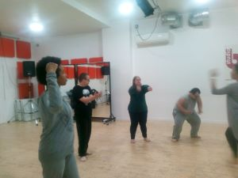

I work as a mentee in hospital wards at The Royal Brompton and Harefields with the arts team, playing music in small groups and one to one at the patients' bedside. Creating a space to express feelings and choices which can often be forgotten in a hospital setting
I work as an Inclusive Dance Artist with Corali Dance Company leading and supporting the youth group Kick Up and the adult class Explore. As well as this I work on the nation wide project A Chance to Shine, working in Special Educational Needs Schools across the UK
I have a BSc in Psychology and an MSc in Clinical Neurodevelopmental Disorders with a specialism in Learning Disabilities. I have vast experience with both quantative and qualitative data collection and analysis. I am about to have a paper published exploring People with Learning Disabilities views of their Mental Health Service
I use a wholistic approach to mental health, drawing on my training and experience from a wide range of backgrounds